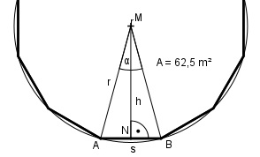

Aufgabe 108 Wie groß ist der Umkreisradius r einer zwölf- eckigen Säule mit einer Querschnittsfläche von 62,5 m2?

360° α = ------ = 30° 12 s * h A = 12 * ------- = 6 * s * h |:6 * h 2 A s = ------- 6 * h Im Dreieck NBM: s/2 tan α/2 = ----- |*h h h * tan 30/2° = s/2 |*2 A 2 * h * tan 15° = ------- |*6 * h 6 * h 12 * h2 * tan 15° = A |:12 * tan 15° A 62,5 m2 h2 = -------------- = -------------- = 19,4 m2 12 * tan 15° 12 * 0,2679 h = √19,4 m2 = 4,4 m h cos α/2 = --- |*r r r * cos 30/2° = h |:cos 15° h 4,4 m r = --------- = -------- = 4,6 m cos 15° 0,9659